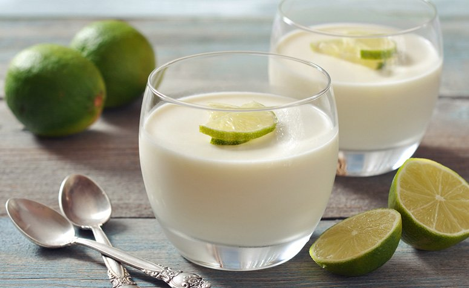

Mousse de Limão

Mousse de limão clássico
Ingredientes
-
1 lata de leite condensado
-
1 lata de creme de leite
-
1/2 xícara de suco de limão (esse suco é puro mesmo, sem água, é só espremer o limão)
Modo de preparo
-
coloque noliquidificador o creme de leite (com soro mesme) e o leite condensado
-
bata um pouco e depois vá acrescentando o suco do limão, aos poucos
-
ele vai ficar consistente, leve á geladeira
Informações adicionais
O mousse de limão é uma receita pratica, fácil de fazer e refrescante.